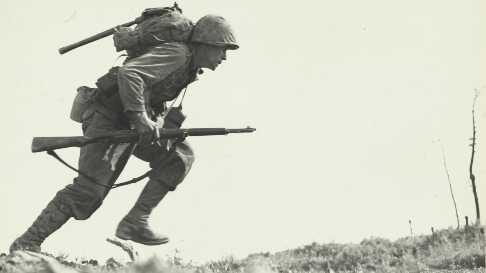

Huzeyfe Gedik'in Sayfalarına Hoşgeldiniz

2.DÜNYA SAVAŞI
İkinci Dünya Savaşı, 1939 ile 1945 yılları arasında gerçekleşmiş olan, insanlık tarihinin gördüğü en geniş kapsamlı, en yıkıcı ve en fazla can kaybına yol açan küresel bir askeri çatışmadır. Savaşın temelleri, Birinci Dünya Savaşı sonrası imzalanan Versailles Antlaşması’nın getirdiği ağır ekonomik ve psikolojik yüklerin yanı sıra, Avrupa’da yükselen faşizm ve Uzak Doğu’daki Japon emperyalizmi gibi radikal ideolojilerle atılmıştır. 1 Eylül 1939’da Nazi Almanyası’nın Polonya’yı işgal etmesiyle patlak veren bu süreç, kısa sürede İngiltere ve Fransa’nın da katılımıyla tüm dünyaya yayılmış; Avrupa, Pasifik, Kuzey Afrika ve Doğu Asya gibi devasa coğrafyalarda eş zamanlı cephelerin açılmasına neden olmuştur. Müttefik Devletler ve Mihver Devletleri olarak iki ana blok arasında cereyan eden bu savaş, sadece orduların değil, sivil halkların ve topyekün sanayi kapasitelerinin de çarpıştığı bir "topyekün savaş" niteliği taşımaktadır. Savaş süresince radyo dalgalarından jet motorlarına, radar sistemlerinden nükleer fiziğe kadar askeri teknolojide devrim niteliğinde buluşlar yapılmış, ancak bu teknolojik ilerleme aynı zamanda Holokost gibi sistematik soykırımların ve atom bombası gibi kitle imha silahlarının kullanılmasıyla tarihin en karanlık sayfalarını oluşturmuştur. Sovyetler Birliği’nin Doğu Cephesi’ndeki amansız direnci, Normandiya Çıkartması ile Batı Avrupa’da açılan ikinci cephe ve Pasifik’teki amansız deniz savaşları, Nazi Almanyası ve Japon İmparatorluğu’nun kayıtsız şartsız teslimiyetiyle sonuçlanmıştır. Savaşın sonunda dünya nüfusunun yaklaşık %3’üne tekabül eden 70-85 milyon insan hayatını kaybetmiş, Avrupa ve Doğu Asya harabeye dönmüş ve dünya siyaseti ABD ile SSCB ekseninde iki kutuplu bir "Soğuk Savaş" dönemine evrilmiştir. Bu çatışma, Birleşmiş Milletler’in kurulmasını tetikleyerek modern uluslararası hukukun ve insan hakları kavramlarının yeniden tanımlanmasını sağlamış; haritaları, rejimleri ve insanlığın geleceğe bakış açısını kökten değiştirmiştir. Günümüzde bile bu savaşın sosyo-ekonomik ve jeopolitik etkileri, modern dünya düzeninin temel taşlarını oluşturmaya devam etmektedir.